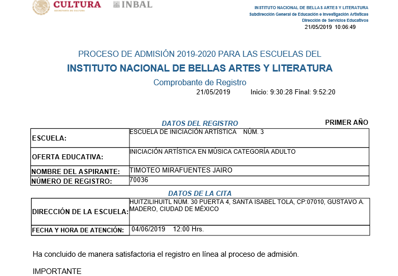

Estudia una licenciatura de musica en Mexico
México sólo existen dos instancias oficiales que expiden certificaciones en música: la UNAM y el Gobierno de México. Debes saber que aunque existen otras escuelas que ofrecen certificaciones, no tendrán validez oficial. Por lo que deberás tener mucho cuidado a la hora de escoger. En todo el país podrás encontrar muchas opciones para estudiar la licenciatura de música. Sin embargo, van a destacar siempre tres: la Facultad de Música (UNAM), el Conservatorio Nacional de Música (Gobierno) y la Escuela Superior de Música (Gobierno). Estas tres escuelas están ubicadas en la Ciudad de México y son las que tienen el mejor prestigio a nivel latino-américa. Por lo que si deseas que tu estudio tenga el mayor impacto académico, deberás considerar estas tres opciones. ya que existen varias escuelas que lo unico que pueden proporcionar es un nivel de tecnico, para estudiar una licenciatura si se necesita tener un conocimiento base dependiendo tu edad, la mayoria de los conservatorios se guian por edad, y la carrera a escoger depende desde la edad que empieza a relacionarse con la musica, algo basico que debe tener una persona que decide estudiar musica debe estar conciente que las escuelas superiores de musica aceptan dependiendo la edad y la edad la relacionan al conocimiento que debe tener, entre mas jovenes con menos dificultad empezara, en caso de ser un joven que va saliendo de bachillerato entre 17 a 20 años pueden hacer una audicion para ingresar a alguna institucion dependiendo a que grado lo asignara la escuela es lo que definira la dificultad del examen de audicion, Lo que muchos jovenes que no tuvieron este desarrollo musical desde el principio optan por tomar sus estudios en escuelas tecnicas, asi para posteriormente iniciar su licenciatura en alguna facultad superior, los conocimientos base que deben tener para empezar es lectura de solfeo, para saber leer e interpretar sonidos especificados en un papel.
Pero aqui es donde nos debemos hacer la pregunta del millon, ¿Vale la pena estudiar música? esto se pregunta mucha gente, principalmente muchachos que van saliendo del colegio y estan buscando una carrera profesional y tienen ese miedo de si se dedican a la musica y se preguntan ¿Podre vivir de esto?, ¿podre comer? o ¿podre llevar un plato a la mesa? como dicen por ahi. Y ese es un pensamiento erroneo de como perciben la musica como profesion, todos van a ver Medicos, Abogados, Ingenieros, publicistas etc. gente que estudio esas carrera pensando en el beneficio a largo plazo y veras que muchas de estas personas terminan haciendo otras cosas o se terminan dedicando a otro tipo de lavores muy diferentes a lo que estudiaron al principio a algunos les va muy bien, a otros no tanto, si te decides a estudiar musica, tu preocupacion no deberia ser si la musica te va a dar para comer, tu preocupacion deberia ser si tu seras lo suficientemente bueno para vivir de la música, Esa deberia ser tu preocupacion y deberias tener que pensarlo ya que la musica no es una de esas carreras que tu estudias en la universidad te dan un diploma te dan un carton y sales a buscar trabajo en una oficina esto no funciona asi, esta es una de las pocas carreras donde el puesto te lo puede ganar una persona sin carton (titulo) simplemente por que es mucho mejor que tu, lo que tu tienes que preguntarte siempre es si seras lo suficientemente bueno para vivir de la musica si eres capaz de realizar todos los sacrificio que ser un musico demanda, si eres capaz de estudiar jornadas larguisimas de praticar no dormir y demas por que es una de las carreras mas dificiles que hay y de las que mas requiere dedicasion fuera del aula de clase entonces tienes que pensar eso. La dedicasion y pasion es lo que te garantizara tu exito, por el amor y la dediccasion que deben poner todos los dias, si tienes un talento tu debes encontrar la forma de explotarlo no esconderlo si tienes un talento tienes que mostrarlo al mundo. para ingresar a alguna escuela superior se debe ingresar a su plataforma en linea para hacer un registro para que puedan apartar un lugar por decirlo asi para un registro de dato, normalmente en las paginas siempre se encuentra un pdf que dice las especificaciones, tiempo y documentos que necesitaras para estudiar asi como el tiempo por istrumento o carrera escogida.
